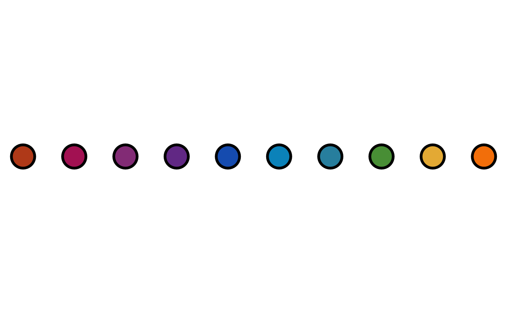
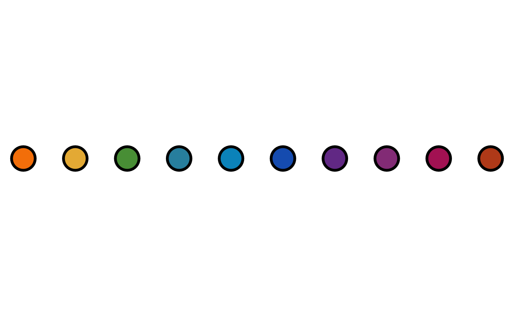

The artpack palette picker. The art_pals function consists of 18 palettes: "arctic",
"beach", "bw", "brood", "cosmos", "explorer", "gemstones", "grays", "icecream", "imagination",
"majestic", "nature", "neon", "ocean", "plants", "rainbow", "sunnyside", "super"
Arguments
- pal
A character string of the desired artpack palette.
The 18 artpack palettes include:
"arctic" - Icy blue and white colors
"beach" - Sand-colored tans and ocean-colored blue colors
"bw" - A gradient of black to white colors
"brood" - A gradient of different shades of dark gray and black colors
"cosmos" - Nebula-inspired blue, purple, and pink colors
"explorer" - Pokemon-type inspired colors
"gemstones" - Birthstone/Mineral-inspired colors
"grays" - A gradient of dark, medium, and light gray colors
"icecream" - A light pastel palette of cream, blue, brown, and pink colors
"imagination" - 90's school supply-inspired colors
"majestic" - Shades of majestic purple colors
"nature" - A mix of tan, brown, green, and red colors
"neon" - A neon spectrum of rainbow colors
"ocean" - A gradient of dark to light blue colors
"plants" - A gradient of dark to light green colors
"rainbow" - A vibrant mix of rainbow colors
"sunnyside" - A retro-inspired mix of pink, orange, and yellow colors
"super" - A marveling mix of heroic colors
- n
The numbers of colors desired in the output.
Default is
5.nmust be a positive integer with a value greater than 0- direction
The direction of the palette
Default is "regular". Only two options accepted: "regular" or "reverse"
- randomize
Determines if the colors in the palette appear in a randomized order.
Default is
FALSE. Boolean where onlyTRUEorFALSEis accepted.
Examples
library(ggplot2)
dots <- data.frame(x = c(1:10), y = 2.5)
dots$fills <- art_pals("rainbow", 10)
dots |>
ggplot(aes(x, y)) +
theme_void() +
geom_point(
shape = 21,
fill = dots$fills,
color = "#000000",
size = 10,
stroke = 2
)

dots_rev <- data.frame(x = c(1:10), y = 2.5)
dots_rev$fills <- art_pals("rainbow", 10, "reverse")
dots_rev |>
ggplot(aes(x, y)) +
theme_void() +
geom_point(
shape = 21,
fill = dots_rev$fills,
color = "#000000",
size = 10,
stroke = 2
)

dots_random <- data.frame(x = c(1:10), y = 2.5)
dots_random$fills <- art_pals("rainbow", 10, randomize = TRUE)
dots_random |>
ggplot(aes(x, y)) +
theme_void() +
geom_point(
shape = 21,
fill = dots_random$fills,
color = "#000000",
size = 10,
stroke = 2
)